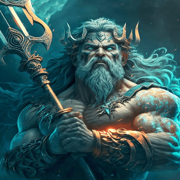
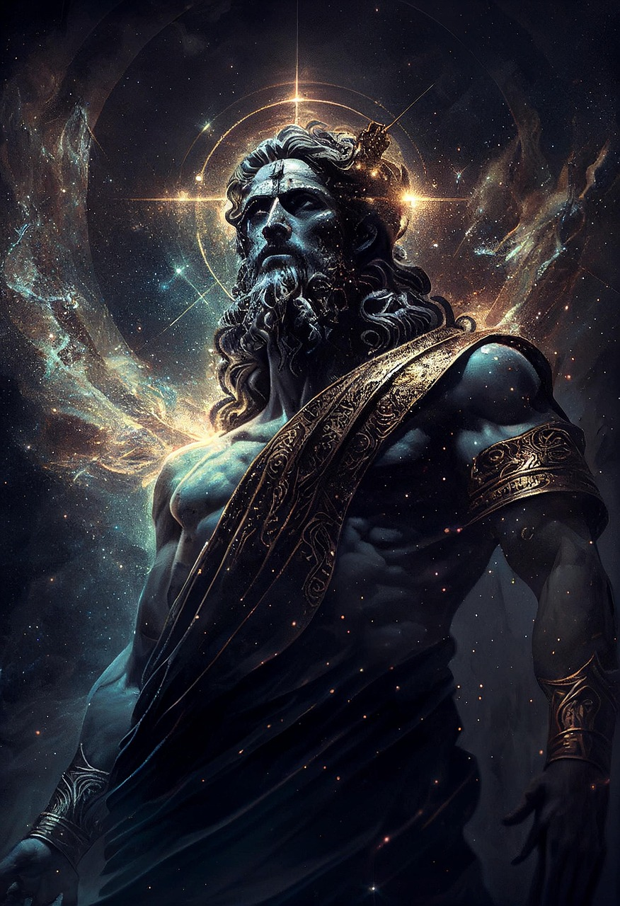
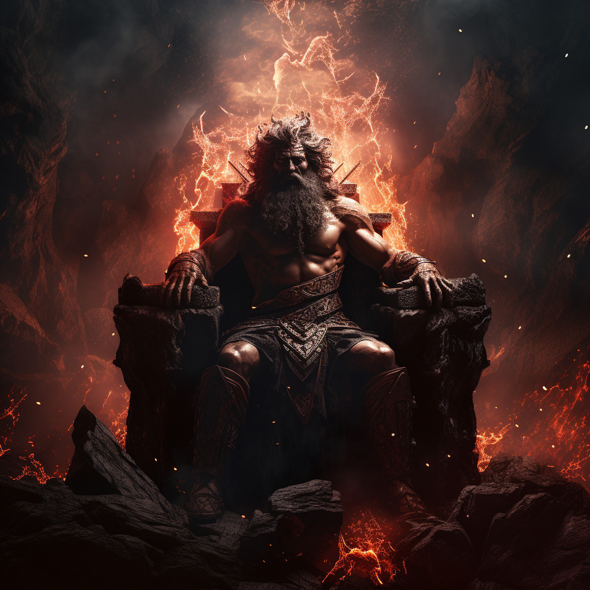
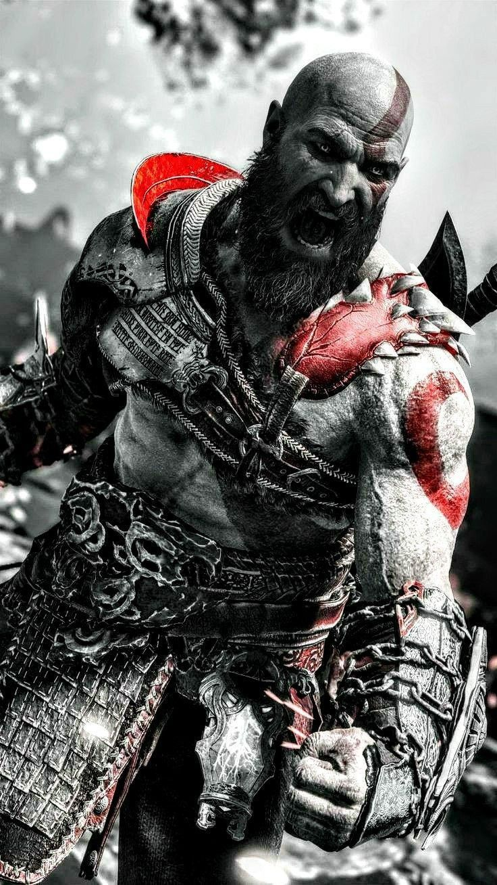

Poseidon (grego: Ποσειδῶν)
era o Deus Olímpico dos Mares, Rios, Água, Tempestades, Ventos,
Furacões, Chuva, Inundações, Secas, Terremotos e Equinos. Filho dos Titãs Cronos e Reia,
Poseidon era mais notoriamente conhecido como o poderoso irmão de Zeus e Hades, bem como de
Deméter, Hera e Héstia. Ele também era o marido infiel de Anfitrite e tio de divindades
poderosas como Ares, Atena e Hefesto. Por último, mas não menos importante, Poseidon tinha laços
familiares com guerreiros lendários como Hércules, Teseu e o próprio Kratos, embora este último
desconhecesse esta ligação em particular.

Zeus (grego: Ζεύς/Δίας )
era o Rei do Olimpo e o governante do Panteão Grego , bem como o Deus do
Céu, Trovão, Relâmpagos, Tempestades, Hospitalidade e Céus. Filho mais novo dos Titãs Cronos
e
Reia , ele era irmão de Hades , Poseidon, bem como Deméter , Héstia e Hera - com quem ele
também
se casaria. Ele gerou uma linhagem de divindades todo-poderosas como Atena , Ares , Hefesto
,
Perséfone , Zagreu , Afrodite , Ártemis , Apolo , Hermes e Dionísio , bem como muitos filhos
mortais como Hércules , Kratos , Deimos , Perseu , Pólux , Pirítoo , Minos e inúmeros
outros.

Hades (grego: ᾍδης ), também conhecido como Háidēs ou Plutão , era o deus olímpico dos mortos e
governante do submundo . Filho mais velho do poderoso titã Cronos e da deusa Reia , era mais
conhecido como irmão de Zeus e Poseidon , bem como de Deméter , Hera e Héstia . Além disso,
Hades era marido de Perséfone e tio do próprio Kratos — um vínculo familiar que este último
desconhecia há muito tempo.

Kratos refere-se a duas entidades: Cratos da mitologia grega, o deus da força, filho do Titã
Palante e da deusa Estige, que ajudou Zeus a subjugar os Titãs e prendeu Prometeu; e
Kratos,
o protagonista da série de jogos God of War, um semideus espartano que se torna um deus
da
guerra e busca vingança. A versão dos jogos se inspira no nome do deus grego, que
significa
"força" ou "poder".